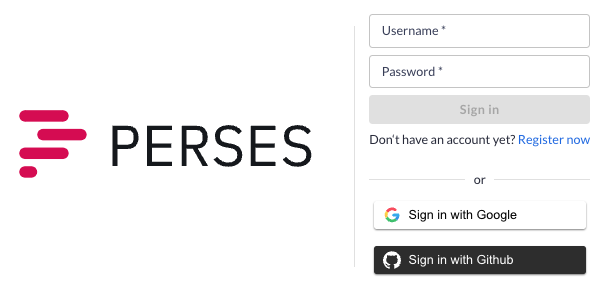
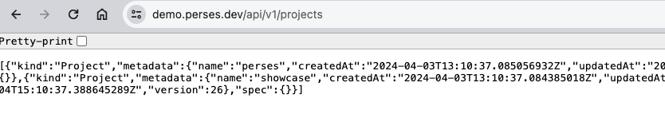
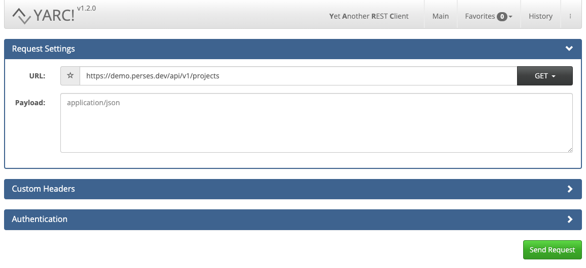
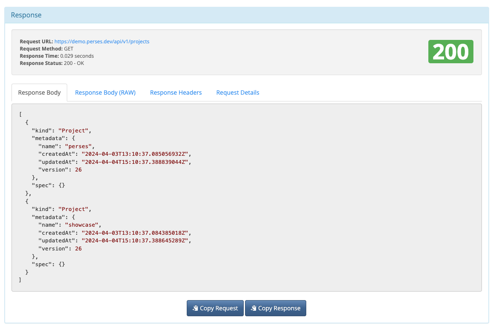
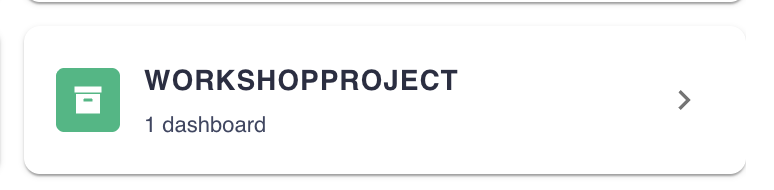
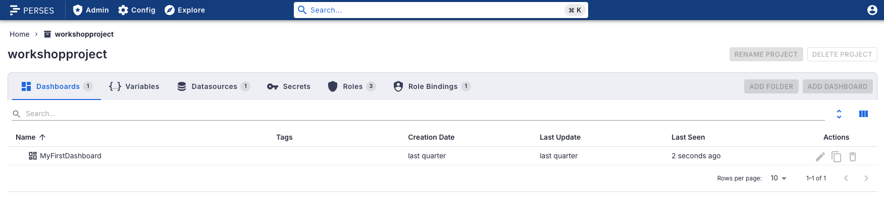
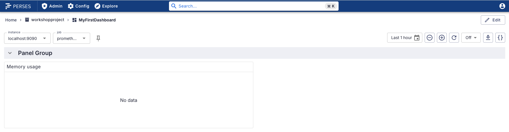
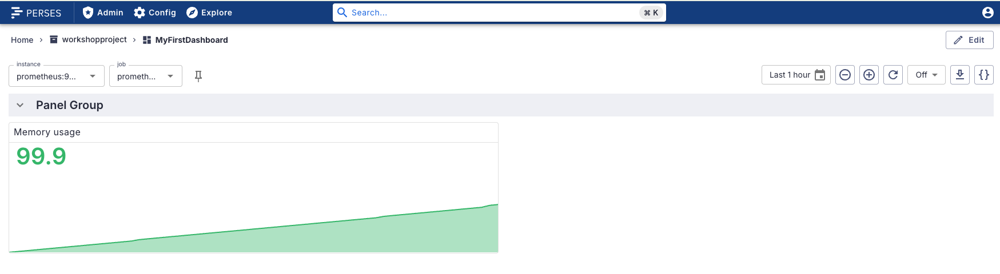

Sandbox - Using the online demo
This is not really an installation, but using a hosted online version of Perses. This can be
used for this workshop, but the example images and example results shown in the rest of this
workshop do not show the sandbox demo.
In this lab you'll log in to the instance from your browser, authenticating a user, set up the Perses commandline tooling, and authenticate the same user. This allows you to complete all the following labs, noting that the featured Perses instance on
In this lab you'll log in to the instance from your browser, authenticating a user, set up the Perses commandline tooling, and authenticate the same user. This allows you to complete all the following labs, noting that the featured Perses instance on
localhost for
all examples is instead the demo.perses.dev instance.
Sandbox - Connect a browser

This is the login screen for the Perses sandbox. There are options for username + password,
Google, or GitHub authentication. Let's sign in with our Google user by clicking that button.
Sandbox - The hosted Perses instance
You should see something similar to this dashboard in your Perses instance, with any number of
projects:

Sandbox - Setting up API access
In the next lab we will be exploring the Perses API using browser URL, a browser extension API
tool, and the Perses command line tooling. Let's test each one of these before moving to the
next lab. You can view the configured projects on your Perses sandbox instance, just enter this URL:
https://demo.perses.dev/api/v1/projects
This shows you un-formatted JSON output of the available projects on the sandbox instance:

Sandbox - Using browser extension (YARC)
Next, let's use a REST Client (YARC) that automatically formats all responses, but you can use
your preferred client. Enter
https://demo.perses.dev/api/v1/projects and
click on SEND REQUEST button as shown:

Sandbox - Project response (YARC)
You'll see the API response is formatted for easy consumption, much better than in the browser:

Sandbox - Command line tooling setup
The first thing we need it a Perses CLI binary, which must match the version we see at the
bottom of the dashboard for Perses sandbox instance. We make sure to
grab a binary matching our OS
found under ASSETS.
Unzip the binary, and you get a directory with a file inside called
Unzip the binary, and you get a directory with a file inside called
percli,
to be used as the command line tool to interact with your Perses sandbox API. For example, this
is for OSX version unzipping the single binary file, then testing it for the help message:
$ tar -zxf perses_[VERSION]_darwin_amd64.tar.gz percli
$ ./percli -h
Command line interface to interact with the Perses API
Usage:
percli [command]
...
Sandbox - Logging in to Perses instance
Now let's log in to the Perses sandbox instance before exploring the API. Use the Perses
command line binary as follows (the command returns nothing) and select the menu entry
Native to enter our user and password by hitting ENTER:
$ ./percli login https://demo.perses.dev
┃ Select Provider
┃ > OIDC (Google)
┃ OAuth 2.0 (Github)
Sandbox - Entering user and password
After hitting enter we are asked to submit a provided code to the URL shown, when done you'll
see you've now logged into the sandbox:
$ ./percli login https://demo.perses.dev
┃ Select Provider
┃ > OIDC (Google)
┃ OAuth 2.0 (Github)
Go to https://www.google.com/device and enter code: SOME_CODE
Waiting for user to authorize the application...
successfully logged in https://demo.perses.dev
Sandbox - Listing all projects (GET)
Let's get a list of our projects using the GET argument as shown below and see again what
projects are configured on our sandbox instance (yours may differ):
$ ./percli get projects
NAME | AGE
------------------+------
perses | 23m
showcase | 23m
Sandbox - Setting up workshop project
The last thing to be done is setting up the
After downloading, unzip the project and using the command line tool run the commands to configure the workshop project as follows:
Workshopproject in the Perses
sandbox instance. We do this by using configuration files and the Perses commandline tool. The
configuration files are provided in the Perses install demo project, which means we need to first
download the installation project (click this link).After downloading, unzip the project and using the command line tool run the commands to configure the workshop project as follows:
$ ./percli apply -f [PATH_TO_INSTALL_PROJECT]/support/workshop-project.json
object "Project" "workshopproject" has been applied
$ ./percli apply -f [ROOT_INSTALL_PROJECT]/support/workshop-demo-myfirstdashboard.json
object "Dashboard" "MyFirstDashboard" has been applied in the project "workshopproject"
$ ./percli apply -f [ROOT_INSTALL_PROJECT]/support/workshop-datasource-prometheusdemolocal.json
object "Datasource" "PrometheusDemoLocal" has been applied in the project "workshopproject"
Sandbox - Verifying workshop project
The workshop project should appear in the list as follows (refresh browser):

Sandbox - Verifying workshop dashboard listing
Clicking on the workshop project should open the project to show the dashboard listing as follows:

Sandbox - Verifying my first dashboard
Clicking on the
MyFirstDashboard entry opens the starting point for the
rest of this workshop as follows, but note the empty panel chart. This workshop is focused a
different datasource for its instance and job data for the workshop and not for this demo sandbox
environment. Let's fix this in by setting up a sandbox datasource.

Sandbox - Adding sandbox datasource
Select the
Instance variable prometheus:9090 we see the
query data filling the dashboard panel:

Intermezzo - Continuing workshop with sandbox
The rest of this workshop will refer to
To continue in this hosted environment in this workshop will require that you manually adjust to point to the data source found on
Also, if the Perses command line tooling fails to connect to the Perses sandbox instance, producing errors after a longer period of use, it just needs to log in again to reconnect. These tips are trying to provide smooth sailing to the end of this workshop!
http://localhost:8080 for the
Perses instance used in the examples and screenshots. If you are using the Perses sandbox
instance, just replace the URL with https://demo.perses.dev.To continue in this hosted environment in this workshop will require that you manually adjust to point to the data source found on
demo.perses.dev.
Most likely the queries we are using locally will need you to adjust to query telemetry data
collected by the demo.perses.dev instance data sources.Also, if the Perses command line tooling fails to connect to the Perses sandbox instance, producing errors after a longer period of use, it just needs to log in again to reconnect. These tips are trying to provide smooth sailing to the end of this workshop!
Lab completed - Results
Next up, exploring dashboard tooling...

Contact - are there any questions?
Eric D. Schabell
Director Evangelism
Contact: @ericschabell {@fosstodon.org) or https://www.schabell.org
Director Evangelism
Contact: @ericschabell {@fosstodon.org) or https://www.schabell.org